120 000frontaliers concernés
40 000 €de besoin de financement
1 000utilisateurs visés la 1re année
3ans pour l’équilibre financier
Le contexte et la commande
- SAE S4.01 : participer à la création d’une organisation relevant de l’économie sociale, solidaire et circulaire.
- Terrain : le Pays-Haut, territoire frontalier où 120 000 personnes traversent chaque jour la frontière luxembourgeoise, dont 80 % en voiture individuelle.
- Constat de départ : embouteillages chroniques, transports en commun mal connectés aux bassins d’emploi et absents en zone rurale.
La problématique
Proposer un projet réaliste, ancré localement, répondant à une problématique sociale et environnementale, en s’appuyant sur les principes de l’économie sociale, solidaire et circulaire.
Le territoire
- Le Pays Haut, au nord de la Lorraine, au contact du Luxembourg, de la Belgique et de l’Allemagne : plus de 240 000 habitants, une identité ouvrière héritée du minerai de fer, et une crise sidérurgique qui a commencé dans les années 1970.
- Les indicateurs sont contrastés : un chômage entre 10 et 15 % dans les communes du nord de la Meurthe-et-Moselle, près d’un actif sur deux qui travaille au Luxembourg, et un revenu médian autour de 20 000 € par foyer — très en deçà des ménages luxembourgeois.
- Chaque jour, environ 120 000 frontaliers traversent la frontière. Les infrastructures routières et de santé côté français absorbent mal ces flux, sans contrepartie fiscale proportionnée.
- Six besoins non couverts ressortent de l’analyse : mobilité durable, accès au logement, services de proximité dans les communes rurales, insertion professionnelle des jeunes, gestion des déchets et économie circulaire. Quatre enjeux les résument : social, environnemental, économique et transfrontalier.
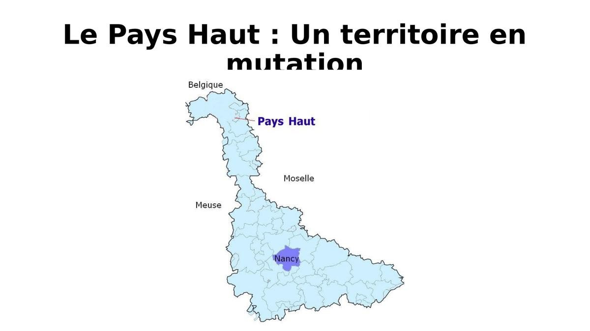
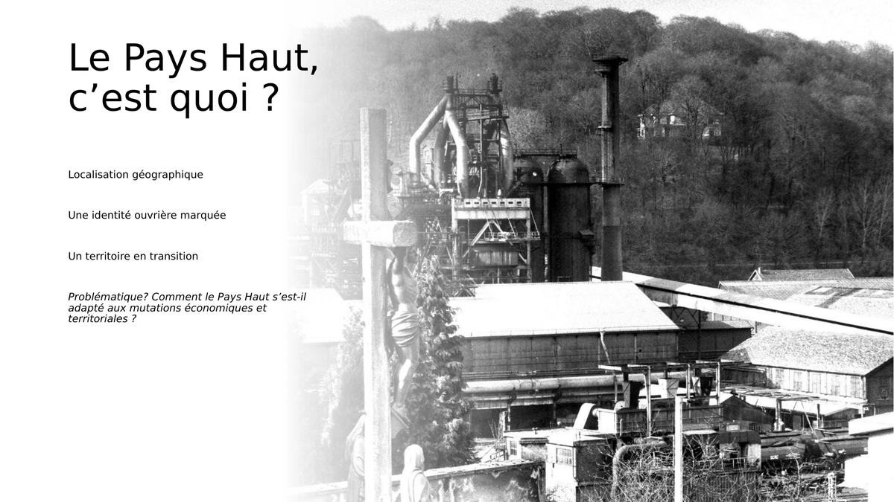
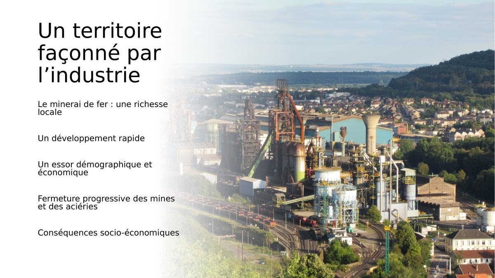
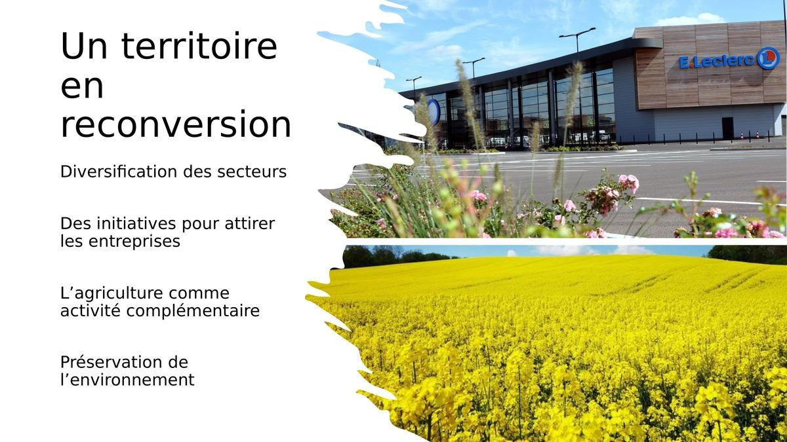
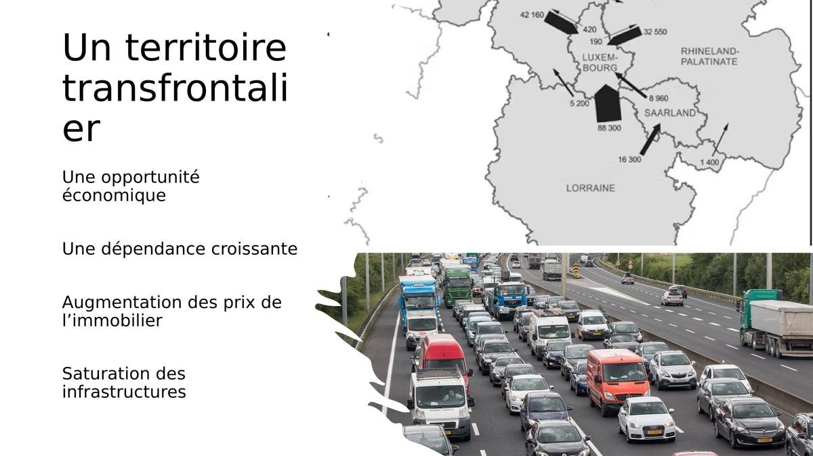
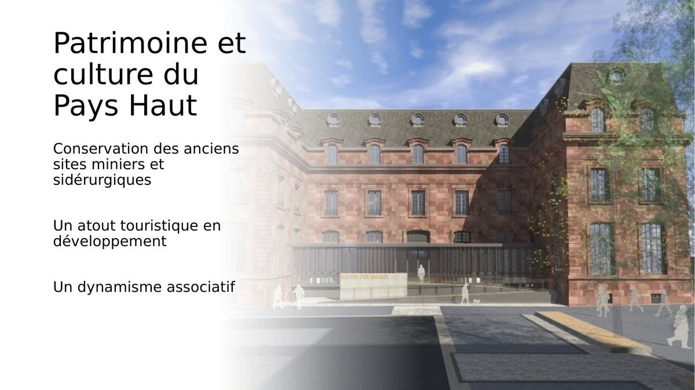
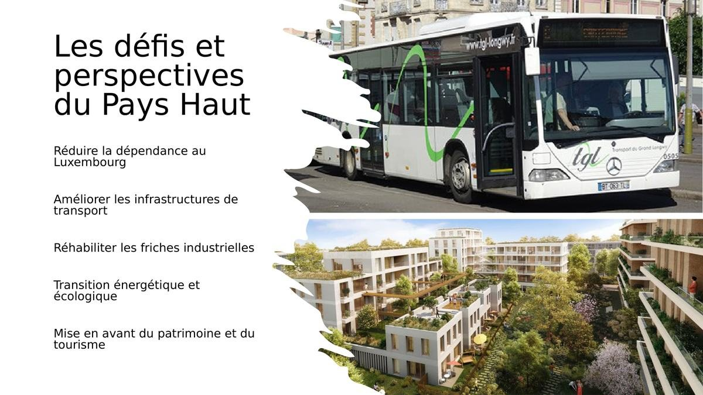
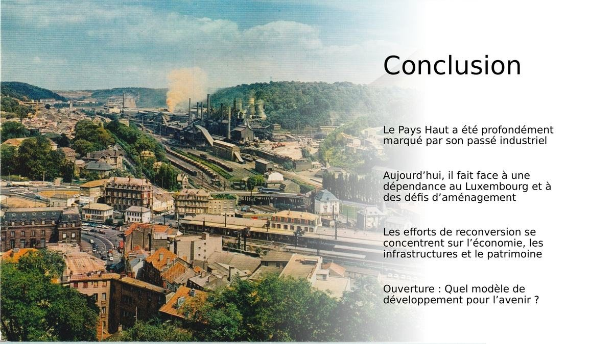
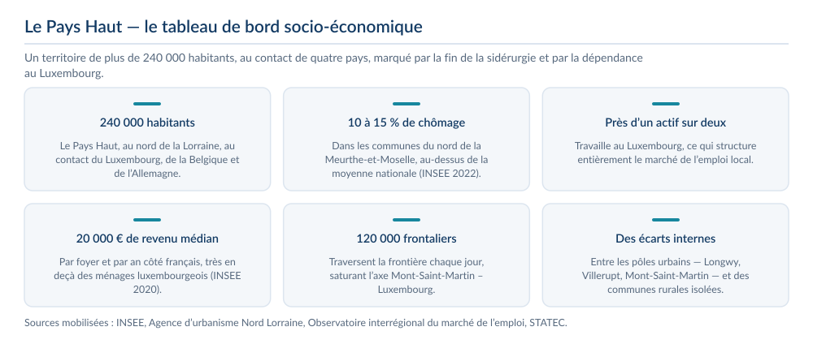
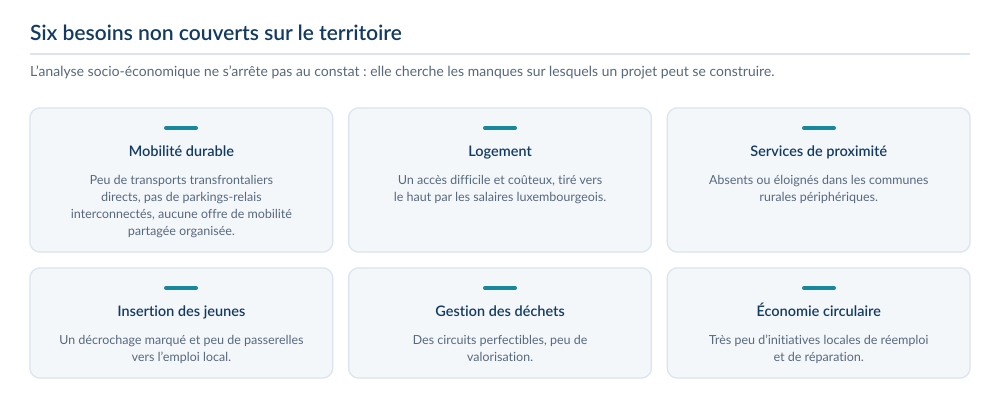
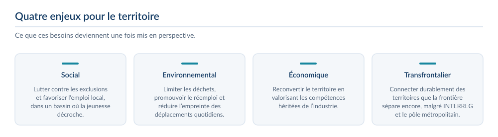
Le projet
- MOBILUX — « Un luxe sans bouchons » — répond au premier de ces besoins : une plateforme numérique de mobilité partagée pour les travailleurs frontaliers.
- Le constat qui la justifie : peu de transports en commun transfrontaliers directs, pas de parkings-relais interconnectés, aucune offre de mobilité partagée organisée — et un coût du transport individuel élevé.
- Cinq missions : faciliter la mobilité des frontaliers, réduire l’impact environnemental des trajets domicile-travail, créer une communauté solidaire, offrir un outil numérique accessible, et renforcer l’attractivité du territoire.
- L’analyse du marché identifie les facteurs clés de succès — une plateforme simple, fiable et rapide, une communication locale ciblée, une communauté engagée — et les opportunités : transition écologique soutenue, marché transfrontalier en croissance, intérêt des entreprises luxembourgeoises.

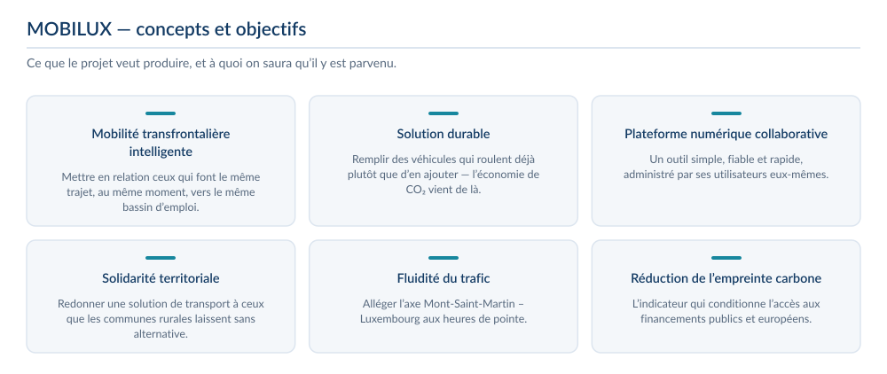
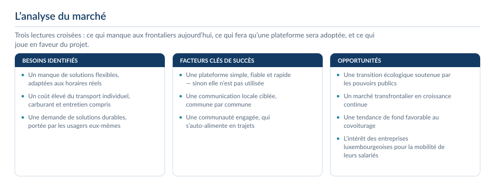
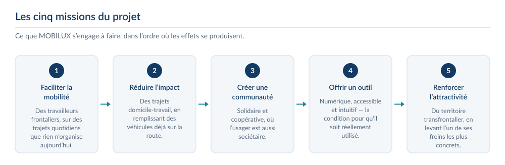
Le modèle économique
- Forme juridique : une société coopérative d’intérêt collectif, dont le sociétariat est ouvert aux salariés, aux utilisateurs et aux collectivités, sur le principe d’une personne, une voix.
- Les revenus combinent un modèle freemium auprès des utilisateurs, des abonnements entreprises, des partenariats logistiques locaux et des subventions publiques ciblées : fonds européens INTERREG et FEDER, Région Grand Est, ADEME.
- Le cadre réglementaire a été traité : conformité au RGPD — transparence sur les données collectées, suppression à tout moment, sécurisation des accès —, réglementation de la mobilité partagée et conventionnement avec les collectivités.
- Le projet est évalué sur les trois piliers du développement durable : économique, sociétal et environnemental, et pas seulement sur son équilibre financier.
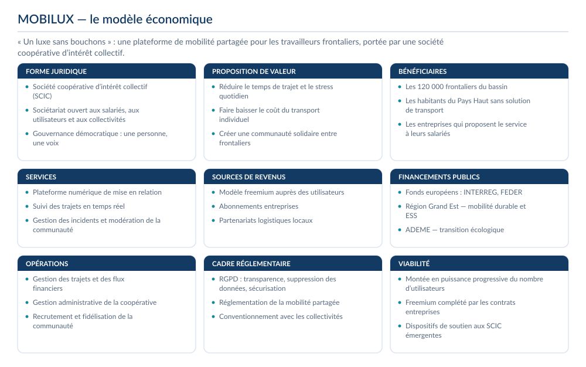
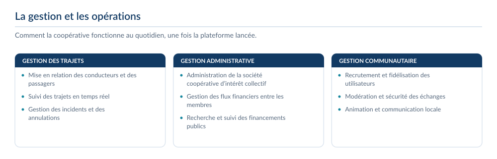
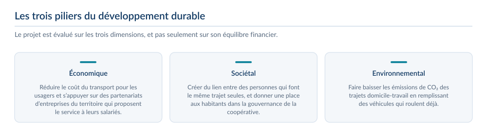
Le budget
- Coûts initiaux estimés entre 42 500 et 52 500 €, revenus prévisionnels entre 53 200 et 66 200 €. Même en croisant l’hypothèse la plus prudente des revenus avec la plus lourde des coûts, le projet reste à l’équilibre.
- Ce que j’en retire : un projet d’économie sociale et solidaire se défend avec les mêmes outils qu’un projet commercial — un besoin documenté, un modèle de revenus et un budget — mais il doit en plus rendre compte de son utilité collective.
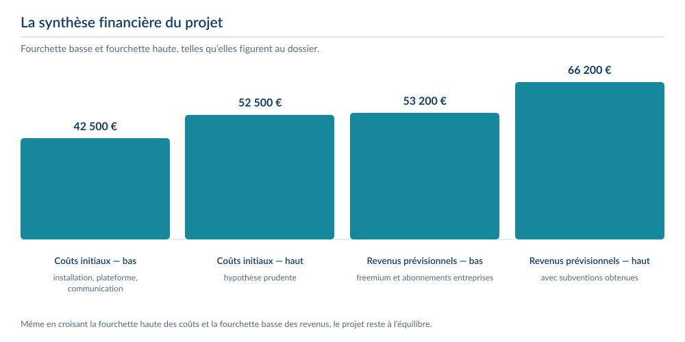
Ce que j’ai produit
- Tableau de bord des indicateurs socio-économiques du territoire, construit à partir de données INSEE, AUNL et Observatoire Transfrontalier.
- Modèle économique complet : SCIC, gouvernance « une personne = une voix », abonnements, publicité locale responsable et subventions Interreg, FEDER, Région Grand Est et ADEME.
- Répartition du besoin financier de 40 000 € : développement de l’application, communication, frais juridiques, ressources humaines et imprévus.
- Identité visuelle, affiche A4 de communication et objectifs de suivi assortis d’indicateurs et de délais.
Ce que j’en retire
- Construire un projet ancré dans un territoire, à partir de données réelles et vérifiables.
- Comprendre les spécificités juridiques et financières de l’économie sociale et solidaire.
- Articuler utilité sociale, viabilité économique et conformité réglementaire — loi LOM, RGPD.
Outils et méthodes mobilisés
Statut SCICDonnées INSEEPlan de financementIndicateurs de suiviCanva